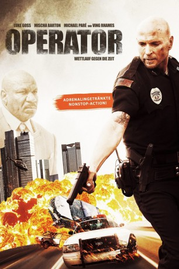

#2111 Operator
 gesehen am 07.10.2015
gesehen am 07.10.2015
 
 IMDB-Wertung: 4.3 / 10
IMDB-Wertung: 4.3 / 10  Metascore: 0
Metascore: 0 
Pamela (Mischa Barton) arbeitet in der Notrufzentrale der Polizei von Atlanta und erhält eines Tages einen merkwürdigen Anruf. Der Unbekannte am anderen Ende der Leitung bringt sie dazu, ihren Ex-Ehemann, den Streifencop Jeremy (Luke Goss), in das Zentrum eines furchtbaren Verkehrsunfalls zu lotsen - ehe dieser überhaupt passiert ist. Jeremy und seinem Partner gelingt es zwar knapp dem tödlichen Crash zu entkommen, aber das perfide Spiel des rätselhaften Anrufers ist noch lange nicht vorbei. Er entführt die gemeinsame Tochter des einstigen Paares und zwingt Pamela dazu, in der Leitung zu bleiben und eingehende Notrufe nicht zu beachten. In der Stadt kommt es zu Chaos und Jeremy eilt von einem Krisenherd zum nächsten. Pamela ist derweil komplett auf sich alleine gestellt und erkennt erst langsam das Ausmaß der Bedrohung. Es beginnt ein Wettlauf gegen die Zeit…
Jahr: 2015
Dauer: 88 Minuten
FSK: 16
Land: USA Studio: AlchemyTonspuren: DTS - ,
Untertitel: Deutsch,
Auflösung: 1080p (1920x824) Größe: 6707 MB
Genre: Action, Drama, Thriller
Regisseur: Amariah Olson, Obin Olson
Drehbuch: Dwain Worrell, Dwain Worrell, Obin Olson, Amariah Olson, Anthony Feole
Soundtrack: George Kallis
Darsteller:
 Ving Rhames als Richard
Ving Rhames als Richard Luke Goss als Jeremy Miller
Luke Goss als Jeremy Miller- Mischa Barton als Pamela Miller
 Michael Paré als Howard
Michael Paré als Howard- Riley Bundick als Cassie
- Tony Demil als Tony
- Maurice Chevalier als Officer Espinosa
- Walter Hendrix III als Officer Stanton
- Wendell Kinney als Officer Williams
- Julie Guevara als Karen
- Althea Tines als Monique
- Eric Joshua Davis als Eddie
- Christopher Marrone als Officer 4
- David Alessi als Police Officer
- Ryan Monolopolus als Police Officer
- Irene Santiago als 911 Caller
- Summer Perkins als Grace
- Christina Quinones als Teacher
- Ashley Allen als Attractive Woman
Datei: X:\2015(N-Z)\Operator (2015, FSK, 1920x824).mkv seit 05.10.2015
Festplatte: HD 2015(A-Z)
 Es gibt insgesamt 161 Filme in der Gruppe '2015(N-Z)'
Es gibt insgesamt 161 Filme in der Gruppe '2015(N-Z)'